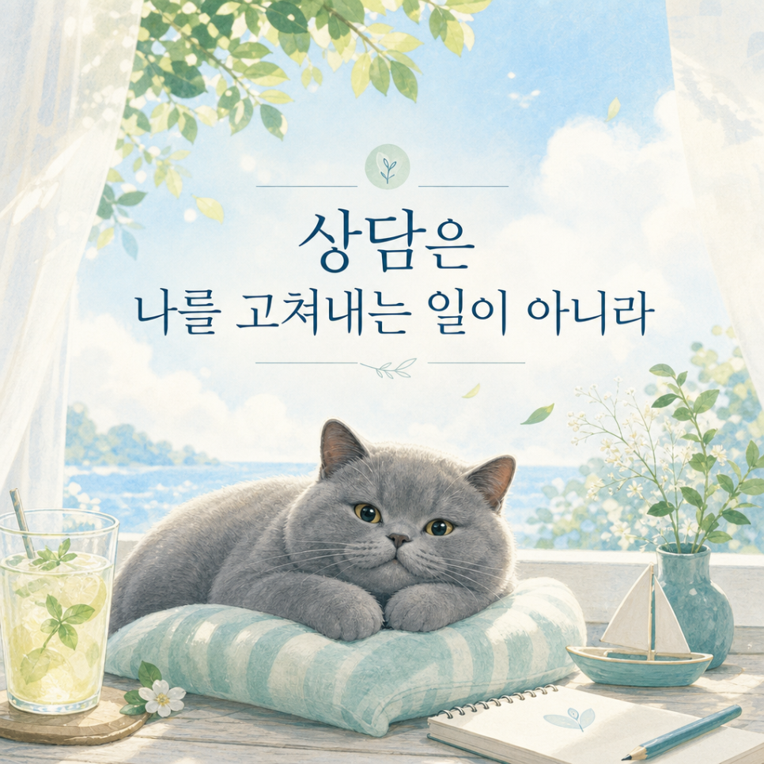
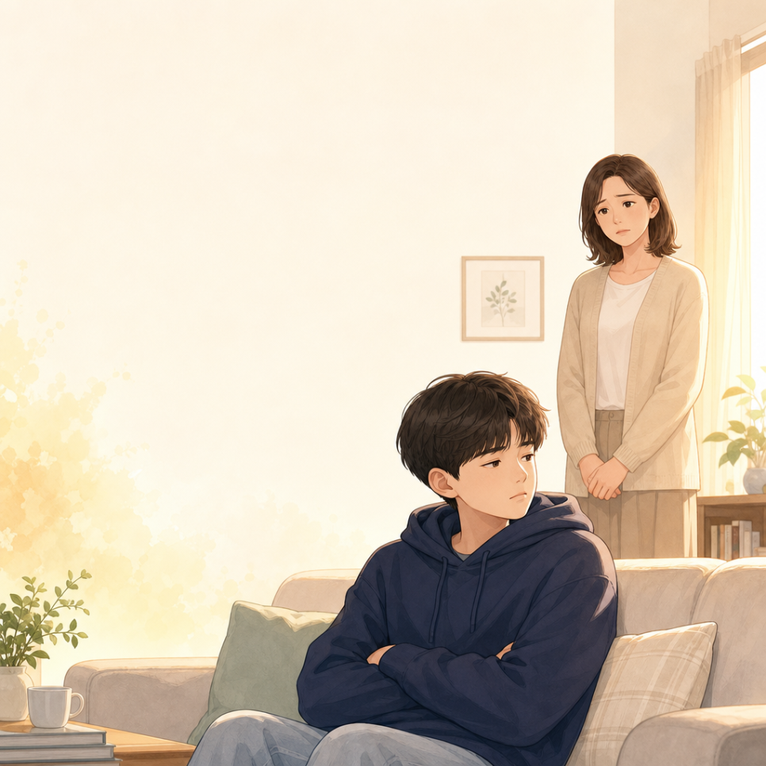

Dodam Stories
센터 이야기
도담마인드케어가 상담실 안팎에서 나누고 싶은 이야기들을 전합니다.

원장 에세이
심리상담을 하는 저도, 번아웃이 올 때마다 '리틀 포레스트'를 꺼내 봅니다
10년 넘게 심리상담을 해온 원장이 번아웃을 다스리는 자신만의 방법

원장 에세이
불안이 심해서 아무것도 할 수 없었는데...
원인 모를 불안감으로 일상이 무너졌던 분들이 다시 일상을 되찾은 이야기

성인상담 이야기
왜 나는 매번 같은 방식으로 상처받을까
정신역동 심리상담이 무엇인지, 반복되는 관계 패턴은 왜 생기는지

성인상담 이야기
남들보다 예민해서 힘들다면? HSP 성향과 대처법
매우 민감한 사람(HSP)이란 무엇인지, 예민함을 다루는 세 가지 방법

아동·청소년 상담 이야기
사춘기 아들, 엄마만 무시하는 이유가 있습니다
엄마에게만 반항하는 사춘기 아들의 심리적 이유와 실전 대처법

아동·청소년 상담 이야기
지능(IQ)은 높은데, 왜 우리 아이는 책 대신 게임만 할까요?
아이가 책 대신 게임을 선택하는 뇌과학적 이유와 해법
사회성 · 슬로우리딩
ADHD 아이, 산만한 아이를 위해 시작된 슬로우리딩 사회성 수업
3년간 연구해 온 슬로우리딩 사회성 그룹수업 이야기

사회성 · 슬로우리딩
독서를 통한 마음성장 프로그램
글을 읽어도 뜻을 이해하지 못하는 아이들, 마음이 닫혀있다는 신호